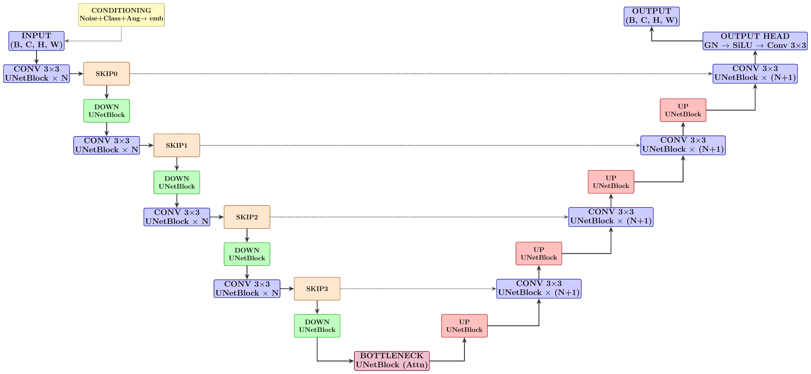

Neural Architectures
IPSL-AID relies on UNet-based architectures, adapted for climate data:
ADM-style UNet
Conditional UNet variants
Support for static and dynamic covariates
Flexible input / output channel definitions
Architectures are selected using runtime parameters, allowing rapid experimentation without code changes.
{kind=link}

Shematic of the UNet architecture used in IPSL-AID, showing encoder, decoder, and attention components.
Default Configuration
The U-Net configuration includes:
Base channel count: \(C_\mathrm{base} = 128\)
Channel multipliers per resolution: [1, 2, 3, 4]
Residual blocks per resolution: 3
Self-attention at resolutions: [32, 16, 8]
Dropout probability: \(p = 0.10\)
Embedding dimension: \(C_\mathrm{emb} = 4 \times C_\mathrm{base}\)
Architecture Components
- Encoder
Progressive downsampling with convolutional and residual blocks. At level \(l\), feature map has height \(H_{\mathrm l} = \lfloor H / 2^{\mathrm l} \rfloor\) and width \(W_{\mathrm l} = \lfloor W / 2^{\mathrm l} \rfloor\).
- Decoder
Mirror of encoder with upsampling and skip connections from encoder.
- Attention
Multi-head self-attention at specific resolutions (64 channels per head):
\[\text{Attention}(\mathbf{Q}, \mathbf{K}, \mathbf{V}) = \text{softmax}\Big({\mathbf{Q}^\top \mathbf{K}}/{\sqrt{d_{\mathrm k}}}\Big)\mathbf{V}\]- Conditioning
Support for: - Noise level embeddings - Class conditioning (e.g., season, region) - Augmentation embeddings - Spatiotemporal context (latitude, longitude, time)
Embedding Layers
Noise levels \(\sigma\) are represented using sinusoidal positional embedding:
Processed by two fully connected layers with SiLU activations.
Conditioning Strategies
Spatial Conditioning: Low-resolution inputs concatenated channel-wise
Global Conditioning: Scalar features projected and added to embeddings
Adaptive Normalization: Feature-wise modulation based on conditioning
Cross-Attention: Attention between features and conditioning vectors
Input/Output Specification
class DhariwalUNet(nn.Module):
def __init__(
self,
img_resolution, # Image resolution as tuple (height, width)
in_channels, # Number of color channels at input.
out_channels, # Number of color channels at output.
label_dim = 0, # Number of class labels, 0 = unconditional.
augment_dim = 0, # Augmentation label dimensionality, 0 = no augmentation.
model_channels = 128, # Base multiplier for the number of channels.
channel_mult = [1,2,3,4], # Per-resolution multipliers for the number of channels.
channel_mult_emb = 4, # Multiplier for the dimensionality of the embedding vector.
num_blocks = 3, # Number of residual blocks per resolution.
attn_resolutions = [32,16,8], # List of resolutions with self-attention.
dropout = 0.10, # List of resolutions with self-attention.
label_dropout = 0, # Dropout probability of class labels for classifier-free guidance.
diffusion_model = True # Whether to use the Unet for diffusion models.
):
...
Climate-Specific Adaptations
Periodic Boundary Handling: Special convolutions for longitude wrapping
Spatial Context: Incorporation of latitude/longitude grids
Topography Integration: Terrain elevation as conditioning input
Land-Sea Masks: Binary masks for land/ocean differentiation
Configuration Examples
opts = dict(
arch="adm",
precond="edm",
img_resolution=[128, 128],
# --------------------------------------------------
# Data channels
# --------------------------------------------------
in_channels=3, # ["t2m", "u10", "v10"]
cond_channels=7, # 3 variables + z + LSM + lat + lon
out_channels=3, # same as in_channels
label_dim=2, # conditional model
use_fp16=True,
# --------------------------------------------------
# Architecture overrides
# --------------------------------------------------
model_kwargs=dict(
model_channels=128,
channel_mult=[1, 2, 3, 4],
num_blocks=3,
dropout=0.1,
)
)
Performance Considerations
Memory: Channel multipliers control memory usage
Speed: Attention layers can be computationally expensive
Accuracy: More channels/residual blocks generally improve quality
Overfitting: Dropout and regularization important for small datasets